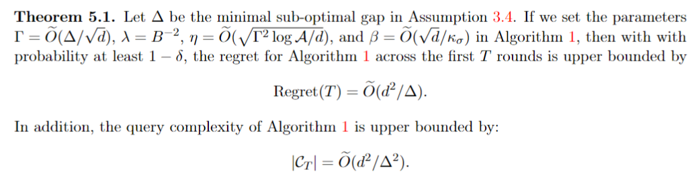

Accuracy (%) of GPT-4-0613, GPT-3.5-turbo-0613 and Vicuna-13b when testing on original and self-rephrased questions using Two-step RaR.

Examples of the self-rephrased questions generated by different LLM models.

Aligning large language models (LLM) with human preference plays a key role in building modern generative models and can be achieved by reinforcement learning from human feedback (RLHF). Despite their superior performance, current RLHF approaches often require a large amount of human-labelled preference data, which is expensive to collect. In this paper, inspired by the success of active learning, we address this problem by proposing query-efficient RLHF methods. We first formalize the alignment problem as a contextual dueling bandit problem and design an active-query-based proximal policy optimization APPO algorithm with a constant regret bound and a constant query complexity. We then propose ADPO, a practical version of our algorithm based on direct preference optimization (DPO) and apply it to fine-tuning LLMs. Our experiments show that ADPO, while only making about half of queries for human preference, matches the performance of the state-of-the-art DPO method.
We propose Active Proximal Policy Optimization (APPO) for learning linear contextual bandits with global sub-optimal gap. In each round, the algorithm first use the following MLE estimator to estimate the parameter: $$ \lambda\kappa_{\sigma} \bm{theta} + \sum_{\tau \in \mathcal{C}_{t-1}}\Big(o_{\tau} - \mu\big(\langle \bm{theta}, \bm{phi}^1_{\tau}-\bm{phi}^2_{\tau} \rangle\big)\Big) (\bm{phi}^1_{\tau}-\bm{phi}^2_{\tau}) = \bm{0} $$. With the estimated parameter, APPO then compute the estimated reward and choose the best arm. APPO will not query for the label if the uncertainty is low. Our theoretical analysis shows the following guarantees regarding regret upper bound and query complexity.
We further proposed Active Direct Preference Optimization (ADPO) as a label-efficient alternative to Direct Preference Optimization. For each piece of prompt and the two answers, DPO treat the LLM as a reward model and assign rewards to the answers. Therefore, the difference of the two scores indicates the model's confidence of its prediction of the label. In ADPO, LLM will only queries the laebls of those answer pairs with high uncertainty. For those with low uncertainty, LLM will use its predicted label as its training target.
We trained zephry-7b-sft-full on the 62k Ultrachat-Feedback dataset using both DPO and our method ADPO. We evaluate the trained models on Open LLM LeaderBoard dataset. We also tested the performance of our method but without training on the pseudo-labels (denoted as ADPO w/o PL). Here are the key points of our results:
We further examine the performance of RaR on various LLMs, including GPT-3.5 and Vicuna. In particular, we employ Two-step RaR to investigate (1) if all these LLMs can provide consistent response improvement by rephrasing the questions; and (2) if the GPT-4-rephrased questions can improve the performance of other LLMs.
@misc{deng2023rephrase,
title={Rephrase and Respond: Let Large Language Models Ask Better Questions for Themselves},
author={Yihe Deng and Weitong Zhang and Zixiang Chen and Quanquan Gu},
year={2023},
eprint={2311.04205},
archivePrefix={arXiv},
primaryClass={cs.CL}
}